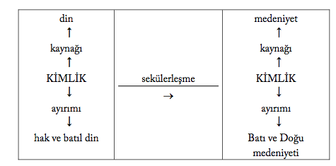

GİRİŞ-BATI’NIN GELİŞİ: ETKİ VE TEPKİ
XIX. asırda dünya çapında bir güç haline gelen Batı medeniyeti ile özelde islâm, genelde Doğu dünyasının sancılı karşılaşması, modern dünyayı saran bunalımın ana kaynağını oluşturmaktadır. Bu çalışmanın amacı, islâm dünyası örneğinde bu karşılaşmanın mantığını keşfetmektir.
Çalışmamızın konusu, kısaca Yahudi-Hıristiyan Batı Avrupa dünyasında sekülerleşme sürecinde dinin medeniyete dönüşümüne paralel olarak Hıristiyanlaştırmadan medenileştirmeye dönüşen kozmopolis idealinin tezahürünün islâm dünyasında yarattığı derin etki ve tepkidir. Takdir edileceği gibi bu, oldukça kompleks bir konudur. Araştırmacıyı bekleyen zorluk, temelde bu ölümcül karşılaşmanın mantığını çözmek için gerekli mukayeseli yaklaşımdan kaynaklanır. Mesele, tarihî perspektifte Batılı din ve medeniyetin dönüşümünü saptadıktan sonra bu dönüşümün tezahürünün islâ-mî hayat ve düşünce tarzını nasıl etkilediğini tespit etmektir. Batı’ da çağımızın Aristosu, en büyük din ve medeniyetler sosyologu sayılan Max Weber’in eseri, temelde bu büyük programı yansıtır. Weber, tarihî gelişimini akliyet kavramıyla karakterize ettiği Batılı din ve medeniyetin özgüllüğünü göstermek için daha sonra Yahudi, Çinli ve Hintli gibi Doğulu din ve medeniyetleri programlı bir şekilde incelemeye geçmişti. Ne yazık ki bu programın önemli bir ayağını oluşturan islâm dinini incelemeye ömrü vefa etmemiştir.
Bilahare Batı’da Batı ve Doğu din ve medeniyetlerini bu çapta mukayeseli olarak inceleyebilen biri de çıkmamıştır.
Bizim çalışmada benimsediğimiz perspektif de Weber’inkine uyar. Batı’da dine bağlı olarak kozmopolis idealinin dönüşümünü gördükten sonra bunun islâm dünyasını nasıl etkilediğini tespite, sosyolojik bir yaklaşımla sosyal ile fikrî değişim arasındaki etkileşim tarzını tasvire çalışacağız. Fikrî değişim, en somut merkezî kavramların içeriklerinde görülür. Bu açıdan çalışmamız, çağımızda bilgi sosyolojisinin de ötesinde bir yaklaşımı temsil eden Rein-hart Koselleck’in geliştirdiği tarihî semantik perspektifini yansıtır.
Bütün dinlerin hedefi, saf barışın hâkim olduğu cennetten dünyaya sürülen insanlar arasında barışı sağlamak, semavî barışı önün-de-sonunda yeryüzünde de gerçekleştirmektir. “Barış-din” ilişkisi en somut, Türkçe el ve Arapça medine kelimelerinin etimolojisinde görülür. Türkçede hakikaten şehir anlamına gelen el (il) kelimesinin “elçi”de olduğu gibi mecazen barış anlamına gelmesi, “barış-şehir”, diğer taraftan Arapça medine (şehir) kelimesinin din’den türemesi de “şehir-din” ilişkisini net olarak gösterir. Herhangi bir ev veya şehir, içinde yaşayan insanların dünyasını oluşturur. Ancak çağdaş Alman filozofu Karl Jaspers’in terimiyle kabaca M. O. VIII. den III. yüzyıla kadarki dönemi kapsayan Mihver Çağda gelen semavî veya beşerî bir dine dayalı medeniyetler, ortak kozmopolis idealiyle temayüz ederler (Tafsilat, Arnason 2005). Nihaî hedef, tikel şehirleri birbirine bağlayarak evrensel barışın hükümran olduğu evrensel şehri kurmaktır.
Cennet barışını sağlayan insanın özsel birliğinin kaybolduğu dünya hayatında “öteki” algılaması, insanları birbirine düşürür. Doğuştan tam eşitliğine karşılık sosyal ortamın getirdiği eşitsizliklerin ürünü tabakalaşmayı yansıtan tikel kimlikler, insanın değişmez gerçeğidir. Ancak tam barışın hükümran olacağı evrensel şehrin inşası, nihaî olarak tikel kimlikli insanları birleştirecek bir evrensel kimliğin teşkiline bağlıdır. Diğer bir deyişle dinler, sosyal tabakalaşmanın ürünü tikel kimlikleri tek tanrı ve hakikat inancında temellenen sağlam bir evrensel kimlikle uzlaştırabildikleri takdirde ancak kozmopolis idealini başarırlar. Yahudilik ve Hıristiyanlık, bu tikelcilik/evrenselcilik dengesini kuramadığı için uçlara düşerek din-temelli kozmopolis idealini başarmakta aciz kaldılar.
Ancak evrensellik anlamına gelen katoliklik kavramının bizzat gösterdiği gibi kozmopolitanizmi varlık sebebi kılan Hıristiyan Avrupa, din-temelli kozmopolis idealini başarmakta aciz kalınca mede-niyet-temelli bir kozmopolitanizme yöneldi. Stephen Toulmin (1992)’in de kozmopolisin “modernliğin gizli gündemi” olduğunu belirttiği gibi, Batılı modernleşme veya sekülerleşme süreci aslında kozmopolis projesinin dönüşümü demektir. Somut olarak bu, alt ve üst-kimliklere bağlı olarak kimlik kaynağının dönüştürülmesi sürecidir (Tafsilat, Gencer 2007a; 2009).
Arapça medeniyet (civility) kelimesi, medine (city), bu da din (re-ligion) kelimesinden türer; buna göre din asıl, medeniyet, türevdir. Medeniyet, gerek makro-sosyolojik, gerekse de mikro-ahlakî bakımdan “dini yaşayışın estetik kalıbı” anlamına gelir. Makro-sosyo-lojik açıdan medeniyet, dini/mazrufu zaman ve mekânda taşıyan bir zarf işlevi görür. Asliyetini koruduğu sürece mazruf, zarfın, din, medeniyetin biçimini, kabaca inanç tarzı, yaşayış tarzını belirler. Ancak Hıristiyanlık örneğinde olduğu gibi din krize girdiğinde belirleyicilik ilişkisinin yönü değişmeye başlar. Bu kritik değişme, Aydınlanma döneminde kolektif-sosyolojik bir süreci belirten medenileşme (civilisation) kavramının ferdî ahlakî bir vasfı, durumu belirten medeniyet (civility) kavramının yerini almasıyla başladı. Değişmeye hüküm giymiş bir dünyada süreç olarak medenileşme, önce ahlakî bir vasfı, durumu belirten medeniyet, sonra statik, ebedî normlar manzumesi olarak dinin, kısaca türev, aslın yerini aldı. Batı’da Hıristiyan inanış tarzının yaşayış tarzını belirlemekten kesilmesi sonucu bilimsel, teknolojik ve ekonomik gelişmenin belirlediği medeniyet (medenileşme)1denen seküler yaşayış tarzı inanış tarzını belirleyici, normatif hale getirildi.
1 Türkçede medenileşme anlamına gelen Batı dillerindeki civilisation a karşılık olarak yerleşen medeniyet, aslında civility’nin karşılığıdır. Bu yüzden metinde tasrih edilmedikçe medeniyet kelimesi, asıl karşılığı civility değil, civilisation anlamında kullanılmıştır.
Böylece evrensel birleştiriciliğe sahip bir güç olarak Hıristiyanlık’tan ümidin kesildiği Westphalia-sonrası dönemde din, medeniyete dönüştürüldü. Kimlik kaynağı olarak dinin medeniyete dönüştürülmesi sürecine paralel olarak ötekileştirme yoluyla özdeşleştirme için medeniyet de ayırıma tabi tutuldu; medeniyetsel ötekileş-tirmenin disiplini olarak oryantalizm sayesinde geleneksel “hak/batıl din” ayırımı, “Batı/Doğu medeniyetleri” ayırımına çevrildi. Fransız Devrimi’nden sonra ise Napoleon, kozmopolis yolunda geleneksel Hıristiyanlaştırma misyonu yerine medenileştirme misyonunu benimsedi. Bu uzun süreç, ferdî-ahlakî bir vasıf, edep olarak medeniyet (civility)e şekilcilik olarak medeniyete toplumsal bir durum olarak medeniyete toplumsal bir süreç olarak medenileşme (civilization)e Maniheik ötekileştirme olarak doğululaştırma (ori-entalizing)e seküler Hıristiyanlaştırma olarak medenileştirme (civi-lizing) kavramlarıyla özetlenebilirdi. Bir şemayla gösterecek olursak:

Diğer taraftan geleneksel Hıristiyanlık-içi ötekileştirme de bu süreçte karmaşık bir dönüşümden geçti. Sekülerleşme sürecinde Katoliklik ile Protestanlık arasındaki geleneksel fırka bölünmesinin medeniyet/kültür bölünmesine dönüşümü, kozmopolise yönelik ötekileştirme ve aynılaştırma tarzlarını kritik olarak etkiledi. Fransız Devrimi’nden sonra Napoleon’un başlattığı sıcak savaş olarak medenileştirme hareketinin ilk doğrudan hedefi genelde islâm dünyası, özelde Osmanlı Devleti olmuştur. Onun 1798’de Mısır seferiyle başlayan Batı’nın maddî, sıcak taarruzuna islâm dünyası, Osmanlı Devleti’nin 1839 Tanzimat Fermanı ile başlattığı politik-kurumsal modernleşme ile karşılık vermiştir.
Medenileştirici Batı’nın Gelişi I: Sıcak Savaş A. Napoleon’un Mısır Seferi
Çok az insanın o esnada farkında olduğu, tarihin seyrini değiştiren kader anları vardır. Fatih Sultan Mehmed’in 29 Mayıs 1453’de orta çağların sonunu simgeleyen istanbul’u fethine tanık olanlar, dinlerinin Peygamberi ‘aleyhi’s-salâtü ve’s-selâm tarafından müjdelenen tarihî bir misyonun gerçekleşmesinden dolayı kuşkusuz o anda bu olayın büyüklüğünün yeterince farkındaydılar. Her ne kadar fethin gerçekleştiği Salı, Yunanlılar arasında halen uğursuz bir gün sayılsa da, kronolojik olarak Rönesans çağına denk gelen bu hadise, aslında Batı medeniyetinin kaderinde olumlu bir dönüm noktası oluşturdu. Fatih, fetihle aslında sadece II. Roma’ya değil, aynı zamanda engizisyonla karakterize Batılı ortaçağa da son verdi. Bundan sonra Batılı Hıristiyanlar, yani Müslümanlar ve Bizanslıların (Toynbee 1962: 154) deyişiyle Frenkler, yaklaşık iki asır boyunca Osmanlı Türklerinin askerî gücü karşısında korkuyla titrerken aynı zamanda ileriye yönelik büyük atılım için gerekli entelektüel ve maddî altyapıyı hazırlayacaklardı. Yeniçağı kapatıp yakın çağı açan Fransız Devrimi bu sürecin zirvesini simgeliyordu.
Bastille Kalesi’nin alındığı 14 Temmuz 1789, sadece eski rejimin sonunu değil, aynı zamanda gerek Batılı, gerekse de Doğulu insan için derin risklere gebe yepyeni bir dünyanın doğuşunu işaretledi. Fransızın şahsında Batı insanı, eski dünyanın bütün otoritelerini, papalık, derebeylik, monarşi ve aristokrasiyi alaşağı ederek kendi kendisinin efendisi olmuştu artık. Kolektif bir mesihçilik olarak gerçekleşen devrimin arkasından yeryüzü cenneti gelecekti beklentiye göre. Fakat eski düzenin altüst olmasıyla beklentinin tam aksine daha da büyük bir kargaşa ortaya çıktı. Devrimin arkasından gelen Terör Devri (1793—4) kaosu daha da derinleştirdi. Tabiat boşluk kaldıramazdı. Çok geçmeden bu kaos ortamından beklenen kişisel Mesih çıktı. Aslen italya Korsika’da doğan Napo-leon, Fransa’da askerlik eğitimi alarak Robespierre’in liderliğindeki Jakoben partisine katılmıştı. 1804’te yeni bir Caesar ve Charle-magne vizyonuyla Fransa imparatoru oldu.
Napoleon (1961: 270) kendisini “Devrimin Mesihi” olarak gördüğü gibi, Hegel dâhil birçok Fransız Alman ve ingiliz aydın da onu beklenen Mesih, Kurtarıcı veya Kahraman olarak görmüştür. O, açıkça kendinde “ilâhî bir misyon” görmektedir. Sözlü ve yazılı ifadelerinden derlenen eser, askerî bir kahramanın ötesinde, Fransa, Avrupa ve bütün dünyanın kaderini değiştirme tutkusundaki Aydınlanma’nın çocuğu Napoleon (1961)’un entelektüel portresini ortaya koyar. Tarihi, “tek hakikî felsefe” olarak gören Napoleon (1961: 244, 255)’un dünyayı değiştirmeye yönelik büyük vizyonu, temelde tarih bilincinden beslenmektedir. O, kendisini “eski ile yeni eşya düzeni arasında doğal arabulucu” olarak tanımlamakta ve öncelikli misyonu olarak rayından çıkan Avrupa’yı rayına oturtmayı görmektedir. Anlaşılan, kolektif Mesih, eski düzeni yıkarken, yeni bir düzen kurma işini ferdî Mesih’e bırakmıştı. Amacından sapan Devrimi, Napoleon (1961: 67, 252), amacına ulaştırmıştı; devrimi geçici bir hevesin ürünü olarak gören onun için gerçek devrim, “tarihin fethi” idi.
Yeni bir küresel düzenin kuruluşu, yekpare bir Avrupalı ve Av-rupalı-dışı kimlik şeklinde kolektif kimlik ayırımının tahkimini gerektiriyordu. Rönesans’tan beri değişim sürecinde olan Avrupa dünyagörüşü, Napoleon zamanında netleşti; bir Avrupalı kimlik ve buna bağlı misyon öngören dünyagörüşü. Birincisi, önceki telakkilere dayalı Avrupa-dışı dünyaya ilişkin bir Avrupa görüşü tahkim edilerek diğer dünyanın sınıflandırılmasına ve maddî istismarına zemin hazırlayan kökten farklı bir Avrupa medeniyeti kavramına dönüştürülmüştü. ikincisi, medeniyet ve ilerlemeyle özdeşleştirilen Avrupa’nın diğer dünyaya kılavuzluk misyonu anlayışı yerleşmişti (Woolf 1992: 74). Billurlaşan modern Batılı dünyagörüşünü temsil eden Napoleon (1961: 48, 242—3), dinin sekülerleştiği medeniyet kavramı ekseninde dünyayı Şark ve Garb olarak iki kutba ayırır. Ona göre birkaç nüans dışında aynı gelenek, din ve adete mensup olan Fransa, ispanya, ingiltere, italya ve Almanya gibi ülkeler tek bir Avrupa, Batı medeniyetini oluşturmaktadır. Avrupa, medeniyetin kıblesi, Fransa da Avrupa’nın kalbi ve lokomotifidir, onun gözünde. Tek bir ulusal beden olarak Avrupa’nın doğuşu, onun en büyük idealidir.
Bunun karşısında gayr-i medenî bir Doğu’nun farazî kuruluşunun ise birbirine bağlı iki hayatî sebebi vardır, Napoleon (1961: 243, 254, 31—4, 105—6)’un söylemine göre. Birincisi, yekpare bir Avrupa kimliğinin kuruluşu ve ikincisi, bunun barış içinde sürdürülmesi. O, zamanla yozlaşan Hıristiyanlığın Avrupa uluslarına ortak bir kimlik sağlamaktan aciz kalmasından dolayı karşı bir kimliğin birleştirici gücüne ihtiyaç olduğu kanaatine varmıştır. Bu karşı kimlik, aynı zamanda Avrupa içindeki müzmin çatışma potansiyelinin boşalacağı bir alanı oluşturacaktır. Rönesans ile başlayan felsefî, bilimsel ve teknik gelişme Napoleon zamanında zirveye çıkmış, böylece bilim ve teknolojiden oluşan medeniyetin maddî gücü, Avrupa’nın kendi kendini yok etmesini sağlayacak bir dereceye ulaşmıştı. Westphalia Antlaşması ile kurulan bağımsız Avrupa devletleri sistemi, din savaşlarına son verirken gelişen ulusalcılık ve bağımsızlık akımlarıyla daha vahim bir etnik çatışma potansiyeli doğurmuştu. Ulaştığı manen zayıf, fakat maddeten güçlü medeniyet itibariyle Avrupa, artık böyle muhtemel bir sivil savaşı kaldıramazdı.
Dünyayı Doğu ve Batı şeklinde iki kutba ayıran Napoleon (1961: 243, 254), ilginç bir şekilde Türkiye, yani Osmanlı Devleti dışında Avrupa’yı dünyanın sadece bir beldesi olarak görmekte ve hemen arkasından eklemektedir: “Savaş yaptığımız zaman biz sivil savaş yaparız.” Ona göre eğer insanlar zincirlerini kıracak olurlarsa, Avrupa kan gölüne dönecek ve sivil ve yabancı savaşlarla medeniyet batacaktır. Bu bakımdan artık kendi içinde paylaşacak bir şey kalmayan Avrupa için hedef, Doğu’ya yürüyüş idi; Avrupa, kendi medeniyetini korumak için gücünü “gayr-i medenî” Doğu’ya harcamak zorundaydı. Avrupa içindeki ulusal özlemler, içsel bir hesaplaşma yerine Akdeniz’e doğru açılımla tatmin edilecektir Napo-leon (1961: 255)’a göre: “Ciddî sorunlar artık Kuzey’de (yani Rusya’da) değil, fakat Akdeniz’de çözümlenecektir: Onun kıyılarında tüm güçlerin tutkularını tatmin etmeye yetecek şey vardır, gayr-i medeni ülkelerin döküntüleriyle medeni ulusların mutluluğu sağlanabilir.” Bu, Avrupalı reelpolitikin, sömürgecilik hedefinin apaçık ifadesidir; mission civilisatrice (medenileştirme misyonu) ise bunun tabir caizse kılıfını oluşturmaktadır.
Napoleon (1961: 243)’a göre Avrupa’da özlenen birleşme gerçekleştikten sonra medeniyetin güzellik idealine ilişkin ham hayalin, yani medenileştirme misyonunun takibi mümkün olurdu; zira bu yeni eşya düzeninde her yerde- Batı’da olduğu kadar Doğu’da- tek biçimli düsturlar, ilkeler, kanaatler, duygular, bakış ve ilgiler yaratmanın artan şansı vardı. Bunu 1798’de Mısır işgalinde Şeyh Mesî-rî’ye ifade eder. “Umuyorum ki,” der Napoleon (1961: 104, 106, 115), “bu ülkenin bütün arif ve âlim insanlarını toplayarak yegâne doğru ve insanlara mutluluk getirebilecek Kur’ân umdelerine dayalı tek biçimli bir hükümet kurabileceğim gün çok uzakta değildir.” Bu tespitten birbirine bağlı iki önemli sonuç çıkarmak mümkündür. ister islâm dini, ister seküler medeniyete dayalı olsun, Napo-leon medenileşmeyi (civilisation) objektif anlamda düzen kurma olarak almaktadır. ikincisi, gerek Avrupa’da, gerekse de Mısır’da kurmayı düşlediği düzeni hep tek biçimlilikle karakterize etmektedir. Bu, ta özünde, kültürel ortamın karakteristiği beşerî çoğulculuğa kapalı ve bu yüzden Yahudilere ilişkin niyetten anlaşılacağı gibi asimilasyonu öngören Katolik zihniyeti yansıtır.
Napoleon (1961: 106), Fransa’da açıkça Katolikliği, azınlığın çoğunluk ile eşit düzeye getirilmesine, onun çoğunluk tarafından yutulmasına yarayan bir güç olarak görmektedir. Ona göre Devrimden sonra Protestanlık ile Katoliklik arasında bir tercih yapması durumunda Avrupa, tekrar kanlı din savaşlarına sahne olacaktı. O, ferdî mizacı bakımından Protestanlığa yakın olsa da politik amaçlarına daha uygun olduğu için Katolikliği benimser, zira Katoliklik, içeride medenileşme (civilisation), dışarıda ise medenileştirmeye (civilising) en uygun araçtır. Onun amacı, Fransa’da bir taraftan medenî/seküler siyaseti hâkim kılarken diğer taraftan Roma impa-ratorluğu’nda olduğu gibi tekrar manevî nüfuz alanına çekilen Kili-se’nin moral-sosyal otoritesinden yararlanmaktı. Napoleon (1961: 254), bu arada Avrupa’da Papalığın manevî nüfuzundan yararlanarak Hıristiyan âlemin başı olabilecekti. Diğer taraftan o, örneğin Rusya’nın Avrupa’ya karşı hareketini doğrudan “medeniyete karşı” olarak tanımlayarak geleneksel olarak kâfirlere karşı cihat anlamına gelen Hıristiyanlaştırma (evangelizing) yerine seküler medenileştir-me misyonunu geçirmekte, böylece Avrupa içinde ve dışında hâkimiyet, emperyalizm için hem dinî, hem seküler, bütün kozmopoli-tanizm yollarını kullanmaktadır.
Napoleon’un 1798’teki Mısır seferi, Avrupa’nın ve bütün dünyanın kaderini değiştirmeye yönelik büyük projesinin ilk adımını, Batı ile Doğu dünyaları arasında etkileri günümüze kadar süren büyük karşılaşmanın miladını oluşturdu. Edward Said (1978)’in belirttiği gibi, Napoleon’un Mısır’ı işgaliyle hâlâ kültürel ve politik bakış açılarımıza hükmeden Doğu ile Batı arasındaki karşılaşma süreçleri harekete geçirilmişti. Batı medeniyetinin dünyaya yayılması olarak görülen bu olay, öncelikle “hangi Batı medeniyeti tarafından ve nasıl bir yayılma” sorusunu gündeme getirecekti. Bu işgal, maddeten güçlü ancak manen yıpranmış Batı âleminin yaşadığı bunalımı küreselleştirmesi anlamına geliyordu. Mısır seferi, görünüşte Hindistan’daki ingiliz emperyalizmiyle rekabet güdüsünün eseriydi. Ancak Doğu’ya yönelik sömürgeciliğin arkasında Napo-leon (1961: 48, 242, 271, 282)’un şahsında Batılı insanın tarihî benlik krizi yatıyordu. O, “Doğu’ya gitmeliyim: tüm büyük haşmet oradan gelir” demektedir. Ona göre hayatın amacı zevk değil, iktidardır. Onun iktidarı, haşmeti, haşmeti ise fetih ve zaferlerinden gelmektedir. Bu uğurda gerektiğinde her tür acıya, çile, fedakârlık, hezimet ve melankoliye katlanmaya hazırdır. Bu, geleneksel dinî şehitlik kültürünün sekülerleşmesi olarak da görülebilirdi.
“Haşmet aşkı, Şeytan’ın Cehennem’den Cennet’e geçiş için Kaos üzerinde kurduğu köprü gibidir: haşmet dipsiz bir boşluk üzerinde geçmişi geleceğe bağlar.” Biraz daha ayrıntılı bakıldığında daha fazla para ve güç kazanma dışında dünyada yapmaya değer bir şey görmeyen, Hıristiyanlığın sadece işlevsel yönleriyle ilgilenen, islâm ve güneş-taparlık dâhil Hıristiyanlığa alternatif inanç ve dinler arasında bocalayan, kendini talihin ve tarihin geri döndürülemez akışına bırakmış, düş ve macera peşinde, belli planları değil, sadece projeleri olan, kelbî bir Napoleon (1961: 37—47) görülüyordu. Böylece o, XIX. asır ingiliz sömürgeciliği dâhil daha sonraki bütün Batılı sömürgecilik vizyonunun ilham kaynağı oldu. XIX. yüzyıl ingiliz edebiyatının psikanalitik perspektiften bir incelemesi (Kucich 2006), bu sömürgecilik vizyonunun arkasındaki “emperyal mazoşizm”i tespit etmiştir. Yeni psikanalitik teoriye göre bu mazoşizm, cinsel sapmadan çok mutlak kudretin narsistik fantezileri bakımından tarif edilmektedir. Muazzam bir maddî güç sahibinin fetih, zafer ve nihaî iktidar uğruna her tür acıya katlanma psikolojisi ise, dünyanın, mazlum halkların kaderini değiştirecektir.
Madalyonun öbür, “romantik” yüzüne bakıldığında ise gene birçok Avrupa insanı gibi, gayr-i makul Hıristiyanlık’tan ve kısır Avrupa medeniyetinden bıkmış Napoleon (1961: 33, 48, 59)’un Doğu’ya, Mısır’a ve islâm’a nisbeten samimi bir yönelişini görmek mümkündür. Asırlardır içine kapanan Avrupa, zamanla taşralılaşa-rak dünyaya açılma imkânını kaybetmişti. Ona göre Avrupa, bir köstebek yuvasıdır. Hâlbuki bütün büyük imparatorluklar ve devrimler sekiz milyon insanın yaşadığı Doğu’da meydana gelmiştir. Bu bakış, “Işık Doğu’dan gelir” sözüne de uymaktadır. O, Mısır’da kendini bunaltıcı bir medeniyetin engellerinden kurtulmuş hissetti. O, rüyalarla doluydu ve düşlediği her şeyi gerçekleştirebilecek araçları elinin altında gördü. Mısır’da geçirdiği zaman, hayatının en güzeliydi, zira en idealiydi. Diğer taraftan Napoleon, Hıristiyanlığı tehdit ve korku, islâm’ı ise vaat ve müjde dini olarak görmekte, birçok yerde Hıristiyanlık ile islâm lehinde mukayeseler yapmaktadır. O, islâm’ı akıl dinine, Hıristiyanlık’tan çok daha yakın görmüş olabilirdi (Hourani 1993: 50, Wendell 1972: 101).
Bununla birlikte ezici bir maddî gücün verdiği hâkimiyet duygusunun refakat ettiği bu arayışın, egzotik bir obje olarak görülen Doğu halklarının kaderine tahakküme varması, meşrû görülemezdi. Tarih boyunca evrensel bir medeniyet havzası olarak işleyen Akdeniz, şimdi Napoleon (1961: 255) tarafından bir iktidar ve ganimet alanı olarak görülmekteydi. Müslümanlar, geçmişte bu medeniyetin sürdürülmesi uğruna siyasî hükümranlıklarından olmuştu. Oysa tam aksine evrensel Akdeniz medeniyeti birikimine kendi damgasını vurarak yerelleştiren Batı, siyasî üstünlüğünü kullanarak kendi kültürünü medeniyete dönüştürecekti.
Batı kültürünün yayılması, sadece bir kaç yüzyıl sürmüştü ve Napoleon ile başlamak üzere bu kültür, medeniyet çağına girmişti. Görünüşte paradoksal bir biçimde Batı medeniyetinin evrensel tezahürü, emperyalizm şeklinde diğer toplumlar üzerinde kendini duyurması, tam iç dinamizmden kesildiğinde gerçekleşmiştir. Görünüşte paradoksal, zira geçmişte Yunan-Roma örneğinde olduğu gibi bu, medeniyetin maddî ile manevî boyutları arasındaki dengenin bozulmasının doğal sonucuydu. Bunun içindir ki Batı kültürünün, XIX. yüzyılın ikinci yarısından itibaren manevî yaratıcılığını büyük ölçüde kaybettiği, bilim, felsefe, sanat alanlarında geçmişin büyük dâhileriyle kıyaslanabilecek çapta cins bir isim çıkaramadığı görülebilirdi.
Şu halde XIX. asırdan sonra evrensel model konumuna yükseltilen Batı medeniyeti denen şey, aslında hükümran, emperyal, özgül Batı kültürüydü. Çağımızın ünlü dinler tarihçisi M. Eliade (1974: X)’nin de belirttiği gibi, diğer dünyanın, sözgelimi Doğu düşüncesinin sorunlarını ve çözümlerini görmezden gelen Batı felsefesi, kendisini deyim yerindeyse “taşralılaştırma” eğilimine sokmuştu. E. Shils (1963: 318, 320) de, Batı kültürünün tamamıyla kendine özgü, aktarılamaz niteliğini vurgularken, XIX. yüzyıldan sonra öne çıkan Batı’nın büyük kültürel başkentlerinin, emperyal güç sayesinde Asya ve Afrika’yı “taşra” konumuna indirgediğini söyler. Dünyayı bir büyük taşra haline getiren Batı’ya kalan tek şey, sadece çok geniş imkânlar olmuştur.
Bütün dünyanın kaderini etkileyen Batı medeniyetinin tarihî özgüllüğü, çağımızda Toynbee ve Hodgson gibi dünya tarihçileri tarafından tespit edilmiştir. Toynbee (1992: 20—53)’nin belirttiği gibi “tarihin hızlanması” deyimi, bilimsel ve teknolojik devrimin sağladığı imkânlar sayesinde küresel sosyal güç dengelerinde meydana gelen anî ve köklü değişimi anlatıyordu. Tarihin hızlanması, modern çağa özgüdür, ancak M. G. S. Hodgson (1974: III/201— 5)’ın da dikkat çektiği gibi, izafî bir terim olan “modern” yerine tarihi hızlandıran esas dinamiği belirten daha objektif bir deyim kullanılmalıdır. Avrupa’nın dünya hegemonyasının ortaya çıkışıyla Sümer’den beri dünyanın tarihî evrimini karakterize eden mekanizmaya son veren bu devir, teknikalizmin ve ona bağlı sosyal kalıpların Avrupa’nın zuhurunda oynadığı merkezî rolden dolayı Teknik Çağ olarak adlandırılmalıdır.
Teknik, evrensel bir olgu olsa da deyimdeki vurgu, nitel olarak farklı bir tekniğin kasd edildiğini gösterir. Geçmişte dünya medeniyetleri genellikle yerel, nicel güç farklılıklarınca belirlenen galibiyet ve mağlubiyetlerle birbirleriyle çekişmiş, ama güç kaynakları temelde aynı kalmıştı. Bin yıl boyunca barutlu silahlar gibi herhangi bir temel teknolojik gelişmenin dünyanın hemen her yerinde çok geçmeden benimsenerek özümsenmesi sayesinde dünya çapında sosyal iktidar dengesi bir şekilde korunmuştu. Çeşitli devirlerde Yunanlılar, Hintliler, Müslümanlar gibi belli başlı topluluklardan her biri parlak zamanlar yaşasalar da güç kaynaklarının temel ortaklığından dolayı uzun vadede aşağı yukarı denk kalmışlardı. Ancak Avrupa Teknik Çağ sayesinde direnilemez bir küresel güç olarak ortaya çıkarak tarımsallaşmış toplumlar arasında bin yıldır süregelen sosyal iktidar dengesini kökten bozdu.
Teknik Çağ, insanlığın en azından bir kısmında tam teknik gelişmişlikle ve bu teknolojik gücün sair insanlık üzerindeki belirleyici etkileriyle kendini gösterdi. Batı’da XVII., XVIII. ve XIX. yüzyıllarda belirginleşen Teknik Çağ, sosyal iktidarın ölçütünü kesinleştirdi: teknikleşme. Teknik Çağ ve beraberinde getirdiği modern hayat tarzı, üstünlüğün yegâne ölçüsü haline geldi. Sözgelimi ingiltere gibi coğrafi olarak küçük devletleri, dünyanın geniş alanlarına hükmetmeye muktedir kılan nitel olarak farklı bir güç kaynağı oluştu. Daha önce toplulukların bir şekilde birbirlerinden izole yaşayabildiği dünya, gelişen teknoloji sayesinde gittikçe küçülecek ve Batı medeniyeti gibi bir gücün hâkimiyeti altında artık eskisi gibi bir tecerrüde izin vermeyecekti.
Artık istanbul’un fethinde olduğu gibi, bir topluluğun diğerine askerî galebesinin ötesinde söz konusu olan, modern Batı’nın sair dünyaya kendi medeniyetini model olarak dayatarak kaderini değiştirmeye zorlamasıydı. Batı’nın XIX. asır islâm dünyası üzerindeki etkisi, ingilizce literatürde klişeleşmiş bir deyimle “the impact of the West” (Batı’nın darbesi) olarak ifade edilmiştir. S. Hunting-ton (1996: 58)’ın da dile getirdiği gibi, tarih boyunca süren medeniyetler arasındaki kültürel alışverişler hiçbir zaman bir tahakküm ilişkisine dönüşmemişti. Örneğin bir zamanlar Çin ve Hint kültürünün çeşitli kalemleri daha ziyade egzotik niteliklerinden dolayı Batı dünyasında revaç bulmuştu. Oysa XIX. asırda Çin ve Hindistan’da Batı’nın kültürel ürünleri, zatî egzotik niteliklerinden çok arkasındaki maddî güçten dolayı revaç kazanmıştı.
Napoleon (1961: 59), şimdi Mısır’ı fethetmeye hazır Batılı gücün geçmiştekinden kritik farkını açıkça belirtir. Ona göre 1250’de Mısır, kendini savunmak için daha zayıf bir durumda olduğu halde IX. Louis, durumu lehine çevirmeyi başaramamıştır. O, sefere çıkarak, çarpışarak ve ülke üzerindeki nüfuzunu pekiştirerek harcayacağı sekiz ayı dua ederek geçirmişti. Oysa şimdi kayd ettiği bi-limsel-teknolojik gelişme sayesinde Batı, daha az askerî bir kuvvetle Mısır’ı fethedebilecek hale gelmişti. Böylece Haçlı Seferleri’nden tam 700 yıl sonra 1798’de, Napoleon’un kumandasındaki bir Fransız askerî gücü, fazla bir dirençle karşılaşmadan o zaman bir Osmanlı eyaleti olan Mısır’ı işgal etti. işgali Mısır’dan Filistin içlerine kadar genişletme teşebbüsü akim kaldı ve kısa bir süre sonra 1801’ de Fransız güçleri Mısır’dan çekilmek zorunda kaldı. Ancak bu ne Mısırlıların, ne de tâbi’ oldukları Osmanlıların, Fransızlara rakip başka bir Avrupalı gücün, ingilizlerin sayesinde olmuştu (Lewis 1994: 55-57).
Kısa (1798—1801) sürmekle birlikte islâm dünyasının kaderi üzerindeki uzun vadeli etkileri bakımından bu işgalin tarihî anlamı büyük olmuştur (Ze’evi 2004). Osmanlı’nın Batı ile uzun süreli savaşları, hep Balkanlar ve Orta Asya sınır boylarında yürütülmüştü. Bu alışılagelmiş savaş hatlarını bir çırpıda atlayan Napoleon, Osmanlı’yı hiç ummadığı bir yerden, Arap ana-bölgesinden vurmuştu; bu, artık tüm Osmanlı bölgelerinin kırılganlığını gösteriyordu. İkincisi, yaygın yoruma göre Şark Meselesi’nin başlangıcını oluşturan bu işgalden sonra, Avrupa ülkeleri arasında yalnız Avrasya kıyıları değil, iç bölgelerine kadar “Osmanlı pastası”nın paylaşılması hesapları hız kazanmıştı.
Nitekim bizzat Napoleon (1961: 197) 1808’de St. Petersburg’ daki Fransız büyükelçisine Osmanlı Devleti’nin muhtemel taksim projesinin Rusya ile müzakeresine ilişkin çekincelerini aktarıyordu. Ona göre temeldeki soru daima şudur: “istanbul’a kim sahip olacak?” Bu süreç, stratejik önemi dolayısıyla daha sonra 1882’de Mısır’ın ingiltere tarafından işgaline yol açacaktı. Üçüncüsü bu işgal, Osmanlı Devleti’ni ölümcül değişime zorlayan, hatta II. Mah-mud’u kahrından öldüren tehlikeli bir rakip doğurmuştu. Kısa sürdüğü halde yerleşik siyasî dengeleri altüst eden Napoleon’un işgalinin ortaya çıkardığı iktidar boşluğu, Mısır’da azman bir derebeyi-nin, Mehmet Ali Paşa’nın yükselişine zemin hazırladı (Brown 1984: 25—6).
Yakın Doğu’da ideolojik bir yayılmacılığın üssü olarak gördüğü Mısır’a oryantalizmin desteğinde hazırlıklı gelen Napoleon (1961: 58—9), iskenderiye’yi işgalinin ertesi günü 2 Temmuz 1798’de Mısır halkına hitaben Arapça bir bildiri yayınladı. Bildiriye egemen üsluba göre o, Mısır’a kurtarıcı ve medenileştirici olarak gelmiştir. O, Mısır halkına bu hitabıyla takdir ettiği Büyük iskender’i taklit etmektedir. Yendiği milletlerin sevgisini kazanma sanatına sahip iskender, ona göre, toprakların ötesinde gönülleri de fetih başarısını göstermişti. iskender’in Mısır’ı fethettiğinde Amon isimli Tanrı’ ya gidişi tamamıyla politikti. “Eğer Doğu’da kalsaydım muhtemelen namaz kılıp rükû edeceğim Mekke’ye hacca giderek iskender gibi bir imparatorluk kurardım.”
B. Batı’nın Gelişinin Şoku
M. G. S. Hodgson’ın “Ateşli Silah imparatorlukları Çağı” dediği XV.-XVIII. yüzyılların başında Osmanlı, erken modern dünyanın süper gücü, III. Roma olarak tarih sahnesine çıktı. islâm dünyasındaki siyasî çözülmeye son vererek birliği sağlayan Osmanlı, diğer taraftan Batı’yı askerî olarak tehdit etmeye başladı. Bütün geleneksel sistemler gibi temelde iradî değişimin dışlandığı, istikrarın esas alındığı bir tarih felsefesine dayanan Osmanlı’nın dinamizmi, fetih siyasetine bağlıydı. Fetih için gerekli askerî teknolojide üstünlük güdüsü, diğer alanlardaki yenilik ve dinamizm arayışının da motoru idi. Oysa fethin bir sınırı vardı. Osmanlı liderliğindeki islâm dünyasının XV. asrın sonlarına doğru bu sınıra yaklaşması, sosyal dinamizmin tedrici kaybını da müjdeledi. Ancak cephelerdeki tedricî askerî gerileme, topluma hâkim son din islâm’ın verdiği mutlak üstünlük ve özgüven duygusuyla birleşen siyasî birlik ve istikrar psikolojisini pek etkilemedi. Dışarıdan bir gözlemci, bu süreçte islâm dünyasında tarihin donmuş olduğu izlenimini alabilirdi.
Oysa bu süreçte Batı ile islâm dünyası arasındaki uçurum büyü-yordu. XVIII. yüzyıldan itibaren kendisininkiyle birlikte bütün dünyanın kaderini değiştirecek büyük bir dönüşüm geçiren Batı karşısında islâm ve Osmanlı dünyası tedricen geri kaldı. Aradaki uçurumun büyümesi, iki tarafın temsil ettiği geleneksel ve modern dünyaların arkasındaki zıt zihniyetlerden kaynaklanıyordu. Bu zihniyetler, kanaatimce en iyi tedebbür ve tecessüs kavramlarıyla özetlenebilirdi. Calvin veya Newton’da olduğu gibi, Batı’nın giriştiği bütün keşif ve atılımların arkasında bir tecessüs, bir türlü bilemediği sonunun ne olacağını öğrenme merakı vardır. Batı, sonunda kendisini neyin beklediğini bilemediği tarih tünelinin içinde adeta el yordamıyla, çalkantılar ve altüst oluşlarla ilerlemektedir.